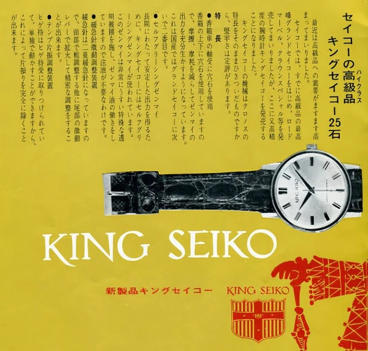
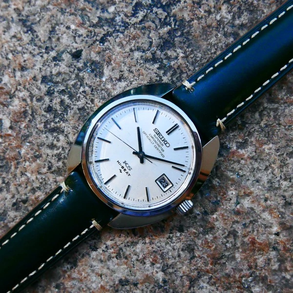
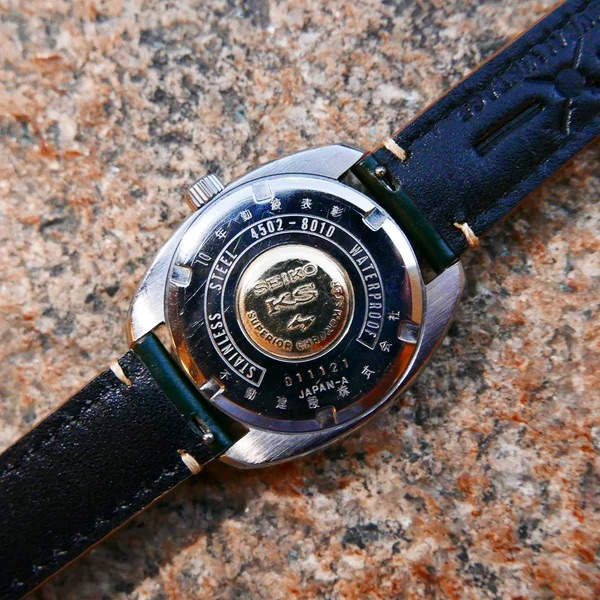
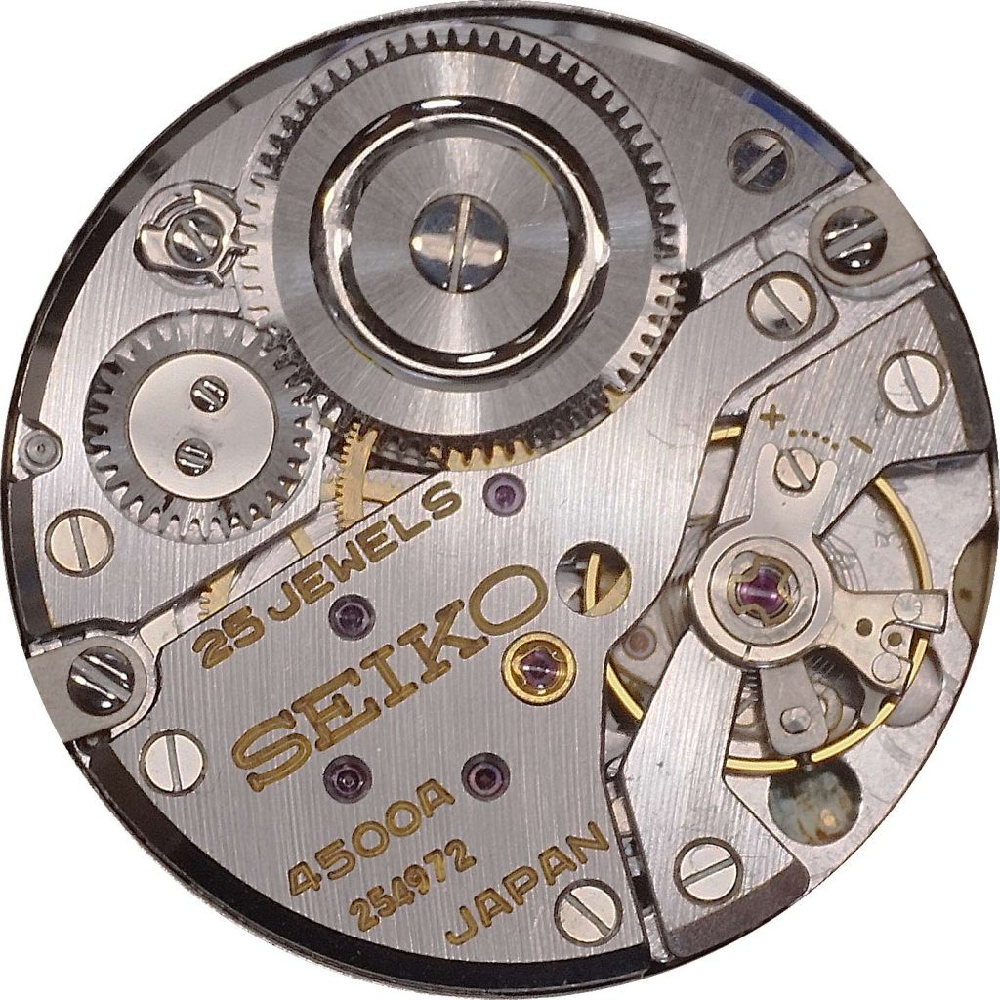

Vintage Catalog Ad
Historical late-1960s Japanese print advertisement highlighting the Hi-Beat King Seiko line.
My favorite of the featured watches is the King Seiko 45-7000 because of its simplicity and superior engineering that has few rivals 60 years later. Not to mention, it costs a fraction of well know Swiss brands like Rolex or Omega and arguably has a more impressive accuracy and movement.

Historical late-1960s Japanese print advertisement highlighting the Hi-Beat King Seiko line.

Clean silver dial layout paired with Daini's angular "Grammar of Design" case contours.

Signature gold King Seiko shield medallion mounted on the screw-down stainless steel caseback.

Daini Seikosha's 25-jewel, 36,000 bph manual-wind high-beat caliber architecture.
Visual footage demonstrating complete mechanical movement disassembly, component cleaning, and precision Zaratsu distortion-free mirror-polish refinishing on a vintage King Seiko.